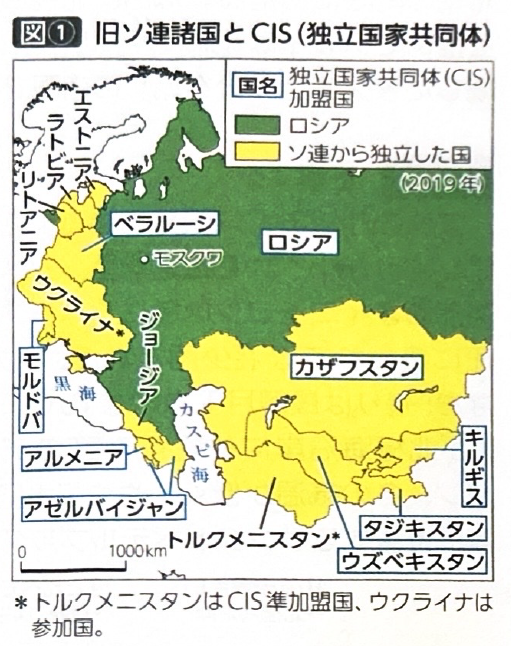
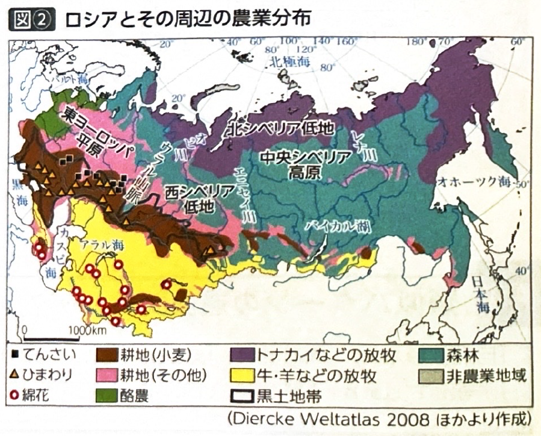
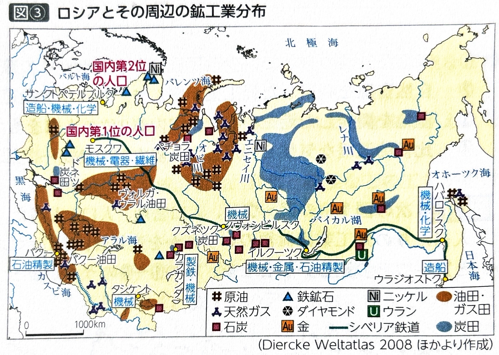
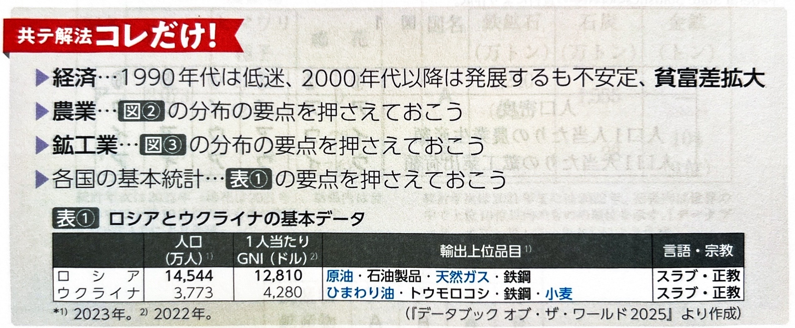

第6章 ロシアと周辺諸国 - 社会と産業
ポイント総復習
1. ロシアとその周辺の歴史・社会
この地域は、20世紀における社会主義体制から資本主義体制への激しい変化を経験しています。
- ソ連の成立と崩壊：1922年に世界初の社会主義国家としてソ連（ソビエト社会主義共和国連邦）が成立しました。しかし1991年に崩壊し、ロシアをはじめとする15の独立国が誕生しました。
- 体制の転換と混乱：計画経済から市場経済への急激な転換に伴い、政治や経済が一時大混乱に陥りました。治安の悪化、貧富の差の拡大、出生率低下・死亡率上昇による深刻な人口減少などの問題が生じました。
- 経済の回復と現在：2000年代以降は、豊富な原油や天然ガスの価格高騰を背景に経済が回復・発展しました。近年は欧米からの経済制裁の影響もあり、中国などとの結びつきを強めています。

2. ロシアとその周辺の農業
国土が広大であるため、気候と土壌に応じた多様な農業が行われています。
| 地域・気候帯 | 農業・産業の特徴 |
|---|---|
| 北部（寒冷地） | ツンドラ地帯でのトナカイなどの放牧や、タイガ（針葉樹林）での林業が行われます。 |
| 中部〜南部 | 酪農や牛・羊の放牧が行われるほか、寒さに強いライ麦やエン麦、大麦などが栽培されます。 |
| ロシア南部〜 ウクライナ |
ステップ気候に属し、非常に肥沃な黒色土であるチェルノーゼム（黒土）が分布します。これを活かし、企業的な小麦生産が盛んに行われています。 |
【特有の農業文化】
- ダーチャ：大都市の住民が郊外に持つ別荘のこと。週末にここを訪れ、野菜や果樹を自家栽培して楽しむ文化が定着しています。

3. ロシアとその周辺の鉱工業
ロシアの工業は、ソ連時代の計画的な配置から、現在の資源輸出中心の構造へと変化しています。
| 時代 | 工業の特徴と課題 |
|---|---|
| ソ連時代 |
国が生産を管理する計画経済のもと、離れた地域の資源を結びつけ、関連工場を集中させて生産を効率化する「コンビナート方式」が導入されました。 また、重化学工業が極端に重視され、軍需産業や宇宙産業が目覚ましく発達した一方で、生活物資の不足や民間企業の技術開発の停滞といった問題も生じました。 |
| 現在 | ソ連解体後、1990年代の低迷期を経て、2000年代以降は原油・天然ガスなどの豊富なエネルギー資源の開発と輸出を中心に経済を立て直しました。 |


基礎問題（理解度チェック）
Q1. ソ連崩壊後のロシア社会・経済について、空欄を埋めなさい。
1991年のソ連崩壊により、経済体制は国家が統制する
から、自由競争に基づく
へと急激に転換した。これにより政治・経済が混乱し、貧富の差の拡大や治安の悪化、さらには出生率低下と死亡率上昇による深刻な
が生じた。しかし2000年代以降は、豊富な
の輸出によって経済は回復・発展した。
Q2. ロシア周辺の農業と土壌について、空欄を埋めなさい。
ウクライナからロシア南部にかけて広がるステップ気候の地域には、非常に肥沃な黒色土である
が分布している。この豊かな土壌を活かして、企業的で大規模な
の生産が盛んに行われている。
Q3. ロシアの特有の農業文化について、空欄を埋めなさい。
ロシアの大都市の住民の多くは、郊外に
とよばれる小さな別荘を持っている。人々は週末や休暇にここを訪れ、自分たちで食べるための
を栽培する文化が定着している。
Q4. ソ連時代の工業について、空欄を埋めなさい。
ソ連時代には、計画経済のもとで離れた地域の資源を結びつけ、関連工場を集中させて生産を効率化する
が各地に導入された。また、国の政策として軍需産業や宇宙産業につながる
が極端に重視された結果、国民の生活に必要な日用品が不足するという事態を招いた。
Q5. ソビエト連邦（ソ連）の時代、工業は国民の生活を豊かにするための軽工業（衣類や日用品の生産など）が最優先され、軍需産業や重工業の発展は後回しにされていた。